În stînga este slide-ul din curs, în dreapta aceeași figură, calculată în browser din aceleași date. Butonul ▶ modifică parametrul pas cu pas.
Dicționare · Date etichetate și evaluare · Modele de limbaj: FinBERT și LLM-uri · Embeddings ca variabile · Look-ahead bias și memorarea · De la sentiment la un semnal de tranzacționare · Scorurile de sentiment sînt estimări · Studii de caz: ChatGPT și culoarea cuvintelor financiare · AI pentru descoperire științifică
Dicționare
Cuvinte negative în psihologie, neutre în contabilitate
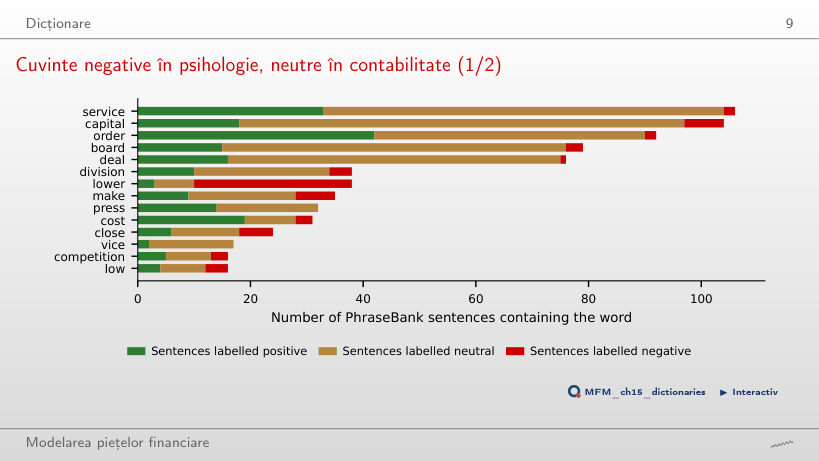
Răspuns
Sub 10% pentru fiecare cuvînt: 2 din 106 propoziții cu „service” (1,9%), 7 din 104 cu „capital” (6,7%) și 3 din 79 cu „board” (3,8%). Semnul unui cuvînt în dicționar nu stabilește eticheta propoziției. Iar un cuvînt fără legătură cu tonul nu ar da 50%: el ar apărea în propoziții negative cu frecvența clasei negative din corpus, 12,5%.
Date etichetate și evaluare
Unsprezece clasificatori, două seturi de date: niciun cîștigător unic
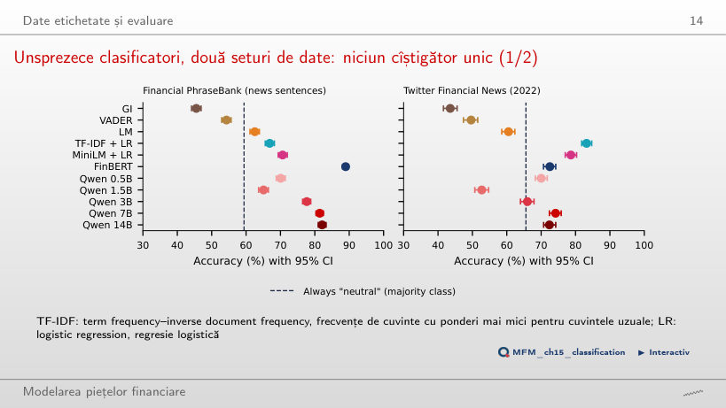
Răspuns
TF-IDF + regresie logistică, cu 83,2%. FinBERT are 72,5%, Qwen2.5-7B zero-shot 74,2%, iar Qwen2.5-14B 72,4%: nici adaptarea la domeniu, nici numărul de parametri nu garantează primul loc. Toate cele trei dicționare rămîn sub reperul „mereu neutru” (65,6%). TF-IDF + LR este antrenat pe etichete Twitter, deci comparația nu izolează efectul arhitecturii.
Modele de limbaj: FinBERT și LLM-uri
Mai mare nu înseamnă întotdeauna mai bun
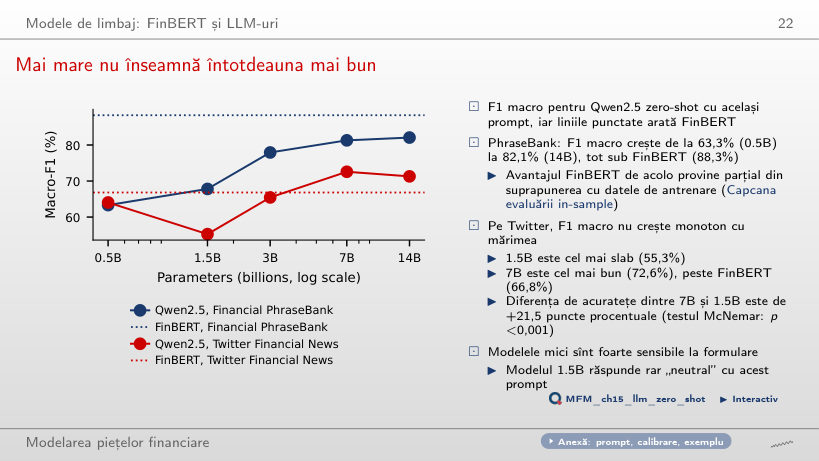
Răspuns
14B. La P3, F1 macro este 57,8% pentru 1.5B, 71,8% pentru 7B și 73,3% pentru 14B. La P1 conducea 7B: 72,6%, față de 71,3% pentru 14B și 55,3% pentru 1.5B. Clasamentul depinde și de prompt: avantajul observat la P1 nu se transferă automat la P3.
Embeddings ca variabile
Pot vectorii generici ai textelor măsura sentimentul?
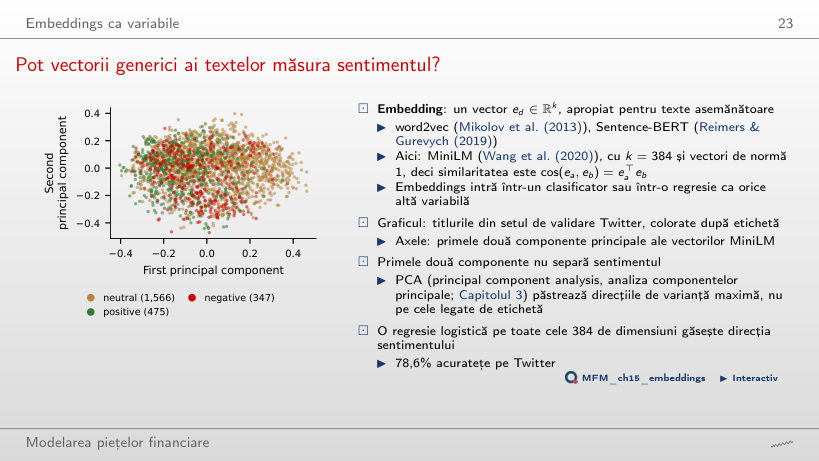
Răspuns
Separarea liniară în acest plan este modestă, dar rezultatul nu exclude informație utilă în celelalte dimensiuni. PCA maximizează varianța explicată, fără să folosească etichetele. AUC privește aici numai ordonarea titlurilor pozitive față de cele negative; nu este acuratețea în trei clase. O regresie logistică pe toate cele 384 de dimensiuni ajunge la 78,6% acuratețe pe Twitter.
Numărul necesar de etichete
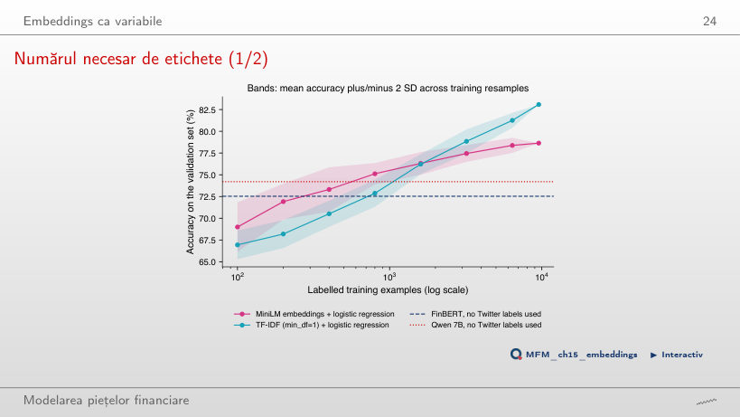
Răspuns
400. Media este 71,9% la 200 de etichete și 73,3% la 400; FinBERT are 72,5%. Unele antrenări depășesc reperul deja la 200, iar la 800 îl depășesc toate cele zece. Pragul de 400 privește media, nu fiecare eșantion. TF-IDF pornește mai jos (66,9% la 100 de etichete), dar ajunge la circa 83% cu toate cele 9 543 de etichete, față de 78,6% pentru embeddings.
Look-ahead bias și memorarea
Memoria măsurată: lunile da, zilele nu
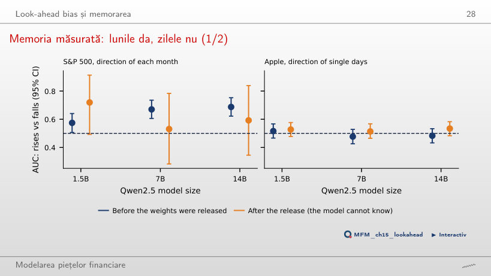
Răspuns
Discriminare peste 0,5, compatibilă cu memorarea, fără să identifice singură mecanismul. Rezultatul măsoară discriminarea unor luni trecute: nu separă memorarea de regularitățile calendaristice sau de regim și nu stabilește performanța viitoare. Pentru zilele individuale ale Apple, AUC rămîne între 0,48 și 0,52. Pe cele 23 de luni de după publicare, AUC este 0,59, cu un interval larg, aproximativ [0,35; 0,84]: ar fi nevoie de circa 101 luni.
De la sentiment la un semnal de tranzacționare
Problema marcajului de timp: date, nu ore
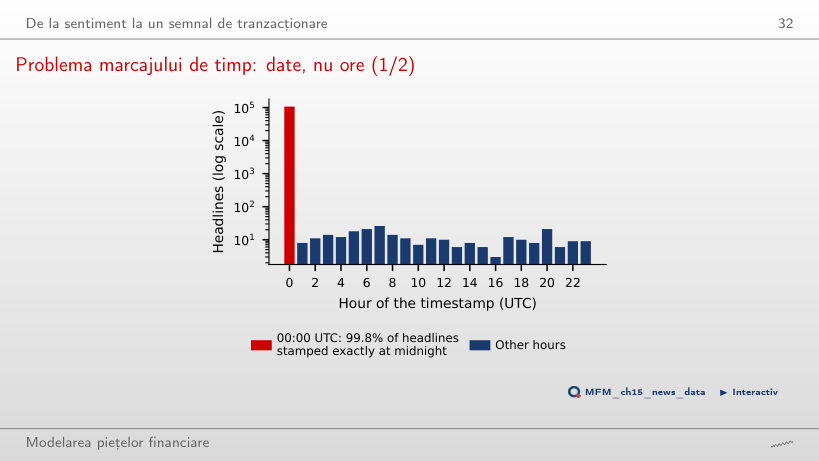
Răspuns
Nu. 99,8% dintre titluri au marcajul exact 00:00 UTC, deci sursa dă doar data. La UTC−5, 00:00 UTC devine 19:00 în ziua anterioară, dar conversia schimbă doar afișarea marcajului, fără să adauge ora publicării. De aceea randamentele din zilele d și d+1 pot conține încă reacția, iar primul randament folosit ca prognoză tranzacționabilă este cel din d+2.
Reacție față de predicție: titlurile descriu prețurile
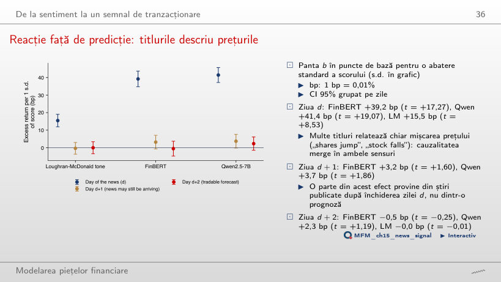
Răspuns
Nu detectăm pante diferite de zero la pragul bilateral de 5%, cu erori standard grupate pe zi. Statisticile t sînt −0,25 pentru FinBERT, +1,19 pentru Qwen și −0,01 pentru LM; niciuna nu depășește în modul reperul asimptotic 1,96. Este lipsă de dovezi în această specificație, nu dovada unor efecte exact nule. În ziua d pantele sînt mari: FinBERT +39,2 bp (t = 17,27) și Qwen +41,4 bp (t = 19,07); multe titluri relatează chiar mișcarea prețului.
Randamentele cumulate ale strategiei: niciun profit net
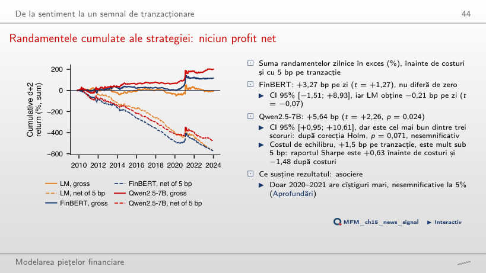
Răspuns
Aproximativ −13,36 bp pe zi. O zi activă plătește 4c: intrare și ieșire pentru poziția în acțiuni și pentru acoperirea cu SPY. Media netă este 5,64 − 0,95 × 4 × 5 ≈ −13,36 bp. +0,89 bp numără un singur sens; −3,86 bp numără un singur dus-întors. Raportul Sharpe scade de la +0,63 la −1,48, iar costul de echilibru este 1,5 bp pe tranzacție.
Scorurile de sentiment sînt estimări
PPI pe titlurile Twitter: corecția distorsiunii este cîștigul principal
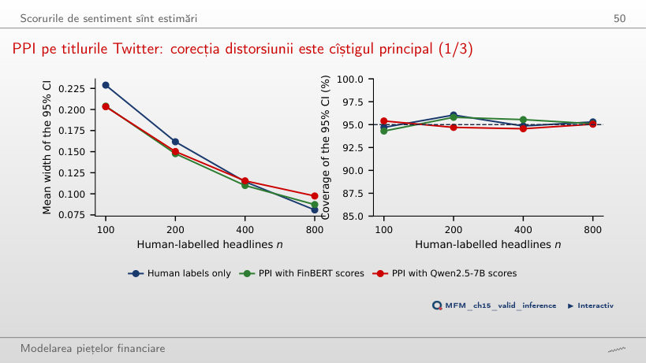
Răspuns
Nu: scade incertitudinea mediei scorurilor, dar distorsiunea rămîne. Mai multe scoruri reduc eroarea de eșantionare, nu corectează distorsiunea modelului. PPI estimează media diferenței f − Y pe un eșantion etichetat și o scade din media scorurilor. La n = 100, intervalele cu nivel nominal 95% au acoperire empirică 94,3% în curs și 94,4% în browser; lățimea medie este 0,204 în curs și 0,203 în browser, față de 0,229 doar cu etichete umane.
Studii de caz: ChatGPT și culoarea cuvintelor financiare
Modelele: reacția inițială și randamentul ulterior
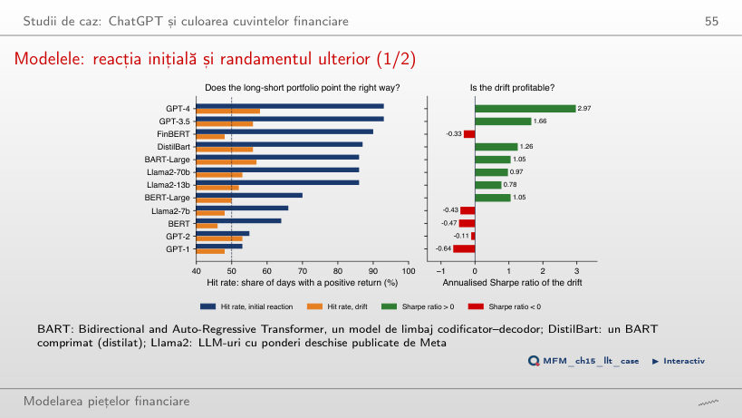
Răspuns
Identificarea reacției inițiale nu garantează randamente ulterioare profitabile. Reacția inițială și drift-ul privesc ferestre diferite: informația reflectată deja în preț poate identifica reacția fără să ofere un cîștig ulterior. GPT-4 și GPT-3.5 au cele mai mari rapoarte Sharpe ale drift-ului, 2,97 și 1,66, dar nu sînt singurele pozitive: DistilBart are 1,26, BART-Large 1,05. Modelele cu rate de succes de 53–66% au rapoarte Sharpe negative.
Listele învățate din randamente, pe titlurile FNSPID
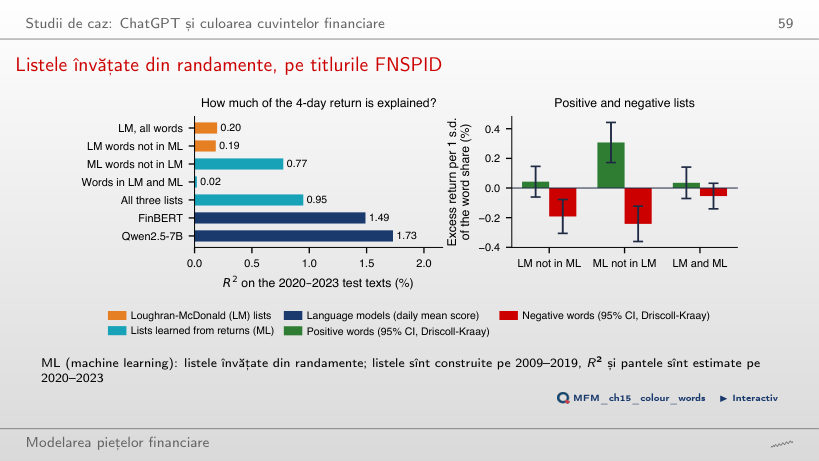
Răspuns
O asociere mai puternică pe textele din 2020–2023, fără să demonstreze o prognoză tranzacționabilă. Listele sînt învățate pe 2009–2019, dar pantele și R² sînt estimate pe 2020–2023, iar fereastra de randament de 4 zile poate include mișcarea relatată de titlu: multe cuvinte ML („jumped”, „slumped”, „gainers”) descriu chiar mișcarea prețului. Diferența de R² este 0,58 puncte procentuale, CI 95% [0,14; 1,02] (bootstrap pe blocuri de 10 zile); nu este un randament al strategiei. FinBERT (1,49%) și Qwen2.5-7B (1,73%) explică mai mult decît orice listă.
AI pentru descoperire științifică
Curba specificațiilor față de zgomot
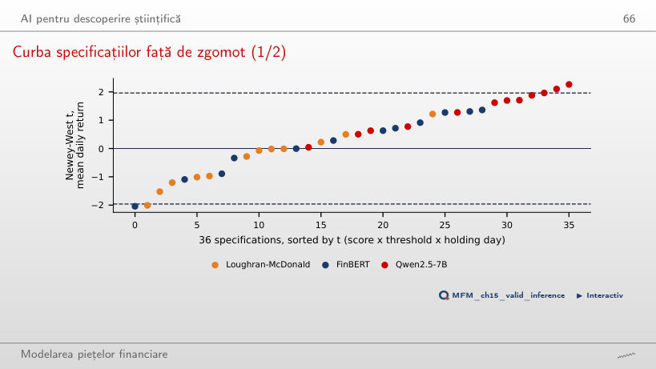
Răspuns
Nu. Comparația relevantă folosește distribuția comună a numărului de depășiri, care păstrează dependența dintre specificații: semnul pozițiilor este schimbat aleator în blocuri de 10 zile. Probabilitatea a cel puțin 3 specificații cu t > 1,96 este 0,113 în curs și 0,103 în browser, ambele peste 0,05. Nu respingem ipoteza nulă, ceea ce nu demonstrează că toate efectele sînt nule. Nicio specificație nu trece de pragul Bonferroni, |t| > 3,20.
Texte etichetate: Financial PhraseBank (Malo et al., 2014) și Twitter Financial News (2022). Titluri datate: FNSPID (Dong, Fan și Peng, 2024), 16 acțiuni americane, 2009–2023; prețuri zilnice EODHD. Scorurile dicționarelor, ale FinBERT, ale modelelor Qwen2.5, MiniLM și TF-IDF sînt cele calculate în capitol. Studiile de caz: Lopez-Lira și Tang (2026), Tabelul 5; Garcia, Hu și Rohrer (2023), replicat pe titlurile FNSPID.